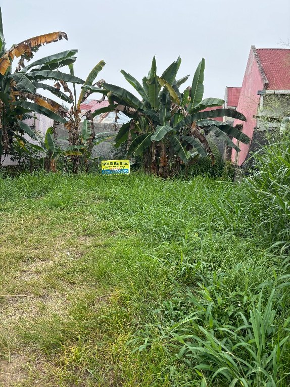

Strategic
Investment
Identifikasi peluang dan keputusan investasi dengan perspektif jangka panjang.
BUILDING ASSETS. GROWING BUSINESSES. CREATING LASTING VALUE.
Shiddiqi Group adalah kelompok usaha yang berfokus pada pengembangan aset, investasi strategis, dan pengelolaan bisnis lintas sektor—dengan fondasi strategi, kemitraan, serta pertumbuhan berkelanjutan.

Shiddiqi Group dirancang sebagai perusahaan induk yang mengarahkan strategi, mengelola alokasi modal, mengawasi kinerja usaha, serta mengembangkan peluang investasi pada sektor riil.
Melalui koordinasi antarbadan usaha, Shiddiqi Group bertujuan membangun portofolio bisnis yang terdiversifikasi. Setiap unit berfokus pada kegiatan operasional dan pengembangan pasar di bidang masing-masing.
Lihat model bisnis ↗Identifikasi peluang dan keputusan investasi dengan perspektif jangka panjang.
Optimalisasi aset produktif dan alokasi modal yang terukur.
Operasional yang fokus, akuntabel, dan mengikuti sektor masing-masing.
Membangun nilai melalui pertumbuhan bertahap dan kemitraan.
Telusuri bidang usaha Shiddiqi Group. Tekan setiap kartu untuk melihat fokus, cakupan, dan kegiatan utamanya.
Shiddiqi Group memisahkan fungsi strategis perusahaan induk dari kegiatan operasional unit usaha. Pendekatan ini mendukung pengelolaan yang lebih terarah, pembagian risiko yang lebih jelas, dan pengembangan portofolio secara bertahap.
Arah strategis grup · Alokasi modal · Pengawasan kinerja · Pengembangan kemitraan · Identifikasi peluang investasi
OUR VISION
Lima arah kerja untuk mengembangkan portofolio dan menciptakan nilai ekonomi berkelanjutan.
Mengidentifikasi dan mengembangkan peluang usaha yang memiliki prospek pertumbuhan jangka panjang.
↗Mengoptimalkan pemanfaatan modal dan aset melalui perencanaan bisnis yang terukur.
↗Membangun kemitraan strategis dengan pemilik aset, petani, peternak, pemasok, dan pembeli.
↗Mengembangkan setiap unit usaha berdasarkan analisis pasar, manajemen risiko, dan efisiensi operasional.
↗Menciptakan nilai ekonomi berkelanjutan bagi perusahaan, mitra, dan masyarakat.
↗Informasi bidang pertanian yang tercantum dalam dokumen Shiddiqi Group. Pilih kartu untuk melihat gambar bidang dan estimasi omzet komoditas.
Catatan terkait estimasi omzet. Rentang padi, jagung, dan cabai di bawah diambil dari dokumen yang diberikan. Ini adalah estimasi omzet, bukan laba bersih dan bukan jaminan hasil; biaya produksi, siklus panen, harga aktual, kondisi lahan, akses irigasi, dan produktivitas perlu diverifikasi. Dokumen juga memuat dua entri 3.100 m² dengan angka serupa; keduanya ditampilkan sebagai entri terpisah sesuai sumber.
Detail penawaran tanah yang tercantum di dokumen, berikut gambar lokasi, informasi harga, dan pembanding iklan properti.
⌖ Kecamatan Pariaman Selatan, Kota Pariaman, Sumatera Barat
Tanah kosong yang dapat dipertimbangkan untuk aset investasi atau rencana pengembangan, dengan pemanfaatan mengikuti status legalitas, kondisi lahan, akses, dan ketentuan tata ruang yang berlaku.
Listing pembanding yang tercantum dalam dokumen. Bukan valuasi resmi atau harga transaksi terkonfirmasi.
3.906 m² · harga penawaran Rp4.000.000.000
SHM menurut listingBuka sumber listing ↗4.062 m² · harga penawaran Rp5.000.000.000
SHM menurut listingBuka sumber listing ↗Kedua pembanding memiliki lokasi dan kemungkinan peruntukan yang berbeda dari tanah yang ditawarkan. Harga iklan dapat berubah dan bukan bukti transaksi final. Harga tanah ini setara sekitar Rp128.205/m² berdasarkan luas perkiraan; perbandingan harus mempertimbangkan lokasi tepat, akses, peruntukan, bentuk bidang, kondisi tanah, dan legalitas.
Sebagai pimpinan Shiddiqi Group, Azhim Tsaqib Shiddiqi mengarahkan strategi perusahaan, pengembangan model bisnis, alokasi modal, identifikasi peluang investasi, serta koordinasi pengembangan portofolio usaha.
Kepemimpinan grup berfokus pada pengambilan keputusan berbasis analisis, pengelolaan aset secara bertanggung jawab, dan pembangunan fondasi bisnis untuk pertumbuhan jangka panjang.
Shiddiqi Group meyakini bahwa pertumbuhan bisnis yang kuat dibangun melalui perencanaan yang matang, integritas, pengelolaan risiko, dan konsistensi dalam menciptakan nilai.
Kami berkomitmen mengembangkan usaha secara bertahap dengan memperhatikan potensi pasar, keberlanjutan operasional, dan hubungan kemitraan yang saling menguntungkan.
Shiddiqi Group terbuka terhadap peluang kerja sama, penawaran aset, kemitraan pertanian dan peternakan, serta diskusi pengembangan usaha. JS Law juga berfokus pada informasi dan konsultasi hukum gratis sesuai kapasitas layanan yang tersedia.
Isi formulir di bawah ini. Isinya dikelola langsung oleh Google Forms.